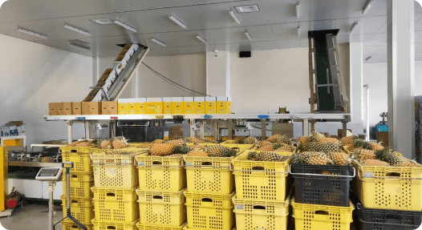
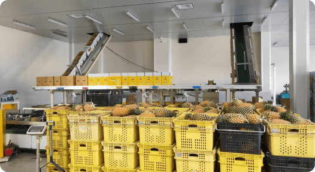

冷鏈系統流程是從田地管理、採收前、採收後、散熱冷卻、包裝、運送到店鋪上架，而過程中最重要的技術就是「溫度控管」，每一個環節的溫度與保存處理方式都非常重要，出了差錯就會導致水果損壞或變質。
冷鏈是一門需要專業人力與能源的技術，特別是在臺灣水果要外銷到世界各地的情況下，這項技術就顯得格外重要，例如芭樂、芒果、蓮霧….以及金鑽鳳梨，都需要透過冷鏈的保存，才能將水果們用最好的品質運送到其他國家，並用最好的狀態銷售給當地的消費者。
鳳梨會在每天清晨 5~9 點間進行採收，鳳梨果實會落在 35℃ 的果溫，有時更熱時會高達 45℃ ，採收回來的鳳梨要馬上放到陰涼處散熱，之後放到水槽裡用5-10℃的水洗降溫，並用冷風吹乾，讓鳳梨不斷冷卻後才會進入包裝，包裝時的室內溫度會控制在22℃， 一箱箱的鳳梨堆疊到貨櫃棧板後會接受「壓差預冷」，讓鳳梨的溫度繼續降到12℃的最佳保存溫度，用冷熱風循環吹入與吸出的方式排出鳳梨果實內所有的熱氣。
在我經歷失敗的經驗後，我幸運得到了回國沈澱的機會，回國後，我積極的找了許多農產專家，尋思該如何扭轉現況，找出能夠改善的解方。
講到金鑽鳳梨的外銷就不得不提到「冷鏈」，冷鏈不單單是把鳳梨們冰起來那麼簡單， 需要經過層層嚴謹的步驟及規範，才能使鳳梨們完好無損的抵達日本。

上架並進行銷售作業
所以鳳梨會黑心就是溫度控管不確實的關係嗎？
農科院農政中心主任 劉育姍
「農委會近年來也推動建設許多大型冷鏈運輸場，尤其在COVID-19疫情爆發後，冷鏈系統的建置越來越完善，也有更多消費者願意改採線上購入生鮮蔬果，所以在冷鏈系統發展的過程中， 關鍵也在於冷鏈的技術人員是否按照正確的程序執行，最困難的點就是如何建立完善的規範跟流程是大家都能共同執行與配合，如果程序不正確，可能就會再次產生負面的影響。」
龍潭合作社主席 何秉洋
最困難需要解決的，應該就是設備的投入，因為在冷鏈操作的過程要讓它不能斷鏈，也就是說，不可以在鳳梨預冷完之後，又把它們放到室外二、三十度的溫度下，上貨櫃跟進入冷藏櫃的時候都要無縫接軌，才不會又升溫。
除了溫度控管，冷鏈技術也有設備、人力、SOP規範等須加強改善的問題，需要由政府帶動農業單位與專家們一起克服困境，才能成就品質穩定的鳳梨外銷。
皇天不負苦心人，經過了一連串的冷鏈優化以及多方人士的努力下，我汲取許多專業的知識，終於解決品質控管的問題，帶著我的兄弟們再次進軍日本，成功東山再起，才有現在意氣風發的金鳳董！